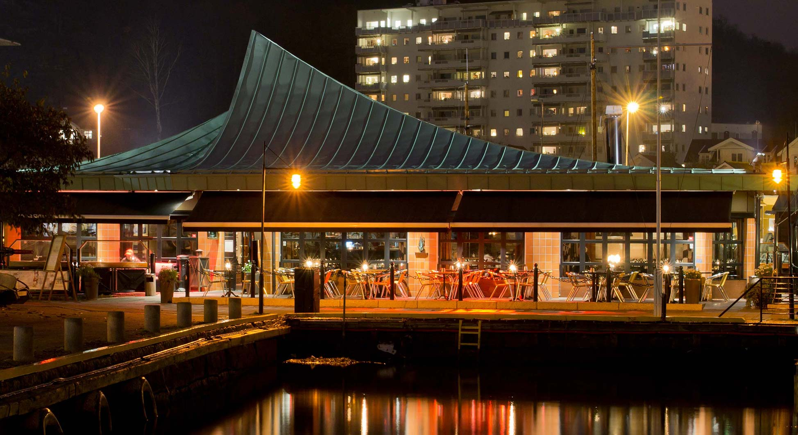

Catering, sjømat & matopplevelser · Sandefjord
Meny
Fiskesuppen er en klassisk kremet suppe med karri, basilikum, blåskjell, grønnsaker og dagens fisk.
Hos Kokeriet Restaurant & Delikatesse får du faglig rådgivning, forutsigbare rammer og løsninger tilpasset ditt behov i Sandefjord.
Komplette menyer, koldtbord, tapas og selskapsretter til dåp, konfirmasjon, bryllup, minnesamvær og vennefester.
Egenproduserte og nøye utvalgte delikatesser, fersk sjømat, tradisjonsrik spekemat, sauser, supper og tilbehør av høy kvalitet.
